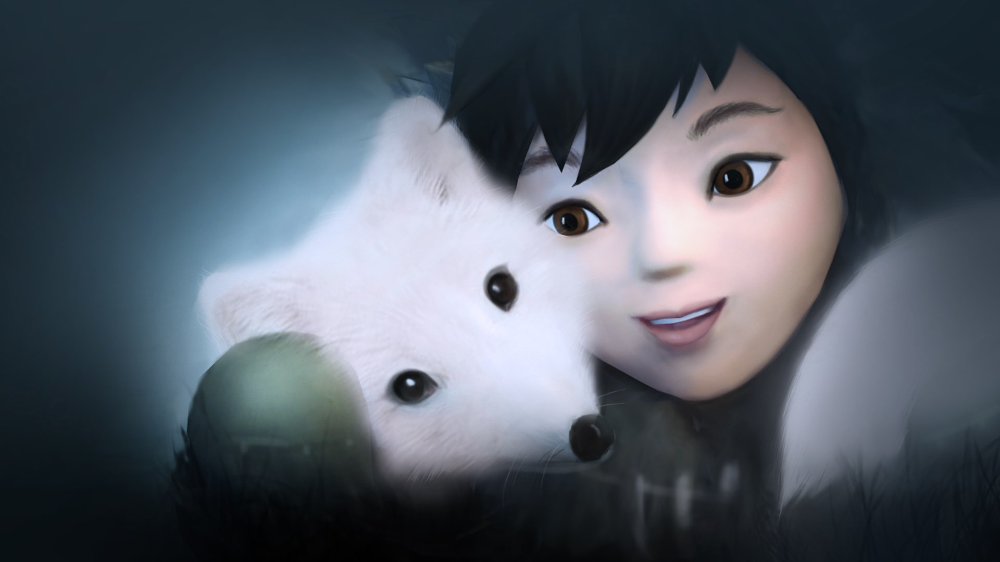

Never Alone é um atmosférico jogo de plataforma e raciocínio desenvolvido em colaboração com os Inupiat, um povo nativo
do Alasca, e inspirado em uma história tradicional compartilhada há várias gerações.
Guie as duas personagens no modo para um jogador ou jogue no modo cooperativo e viaje pela tundra congelada, salte sobre
blocos de gelo traiçoeiros, nade em cavernas subaquáticas e enfrente inimigos estranhos e familiares.
Em mais de 75 listas de "Melhores de 2014" e vencedor da categoria "Melhor Estreia" do BAFTA Games Awards 2015, além de
"Jogo do Ano" e "Impacto mais Significativo" do Games for Change Awards 2015, quase 40 anciões nativos do Alasca,
contadores de histórias e membros da comunidade contribuíram para a criação do jogo.
Você vai explorar ambientes inspiradores, realizar feitos heroicos e conhecer personagens lendários das histórias
Inupiat, tudo narrado por um mestre contador de histórias na língua falada Inupiat.

Características
Jogue como Nuna e a Raposa: alterne entre as duas companheiras a qualquer momento pressionando um botão ou jogue lado a
lado no modo cooperativo local, contando com as habilidades exclusivas de cada personagem para cumprir sua missão. Nuna
pode subir escadas e cordas, mover obstáculos pesados e arremessar sua arma Bola em alvos para solucionar
quebra-cabeças. A Raposa pode passar por pequenas áreas inacessíveis para Nuna, escalar paredes e saltar para lugares
altos.